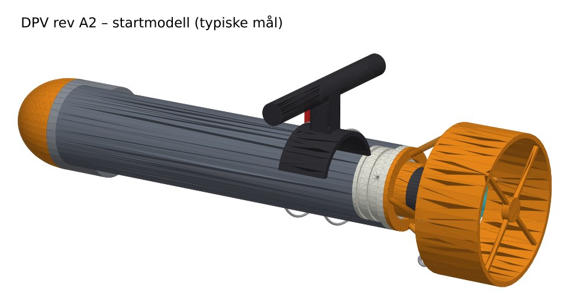
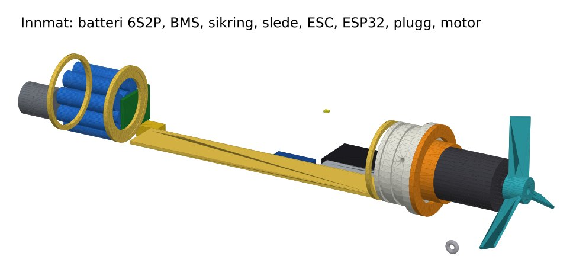
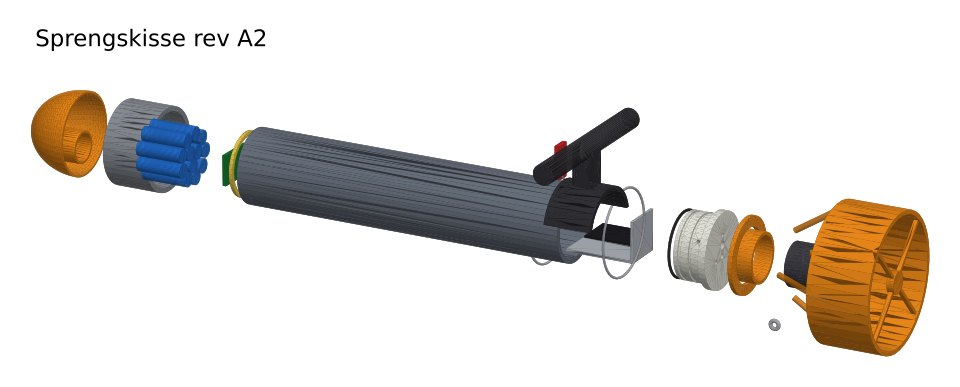

Et studentprosjekt i marin teknikk ved NTNU: en undervannsscooter (DPV) med fart og robusthet i tek-klassen, dimensjonert for 40 m, til under 3 000 kr. Den bygges av standard butikkdeler og 3D-printede deler, og har nøytral oppdrift ved design. Her ligger 3D-modellen, kravene, utregningene, budsjettet og loggen.
Prototype – ikke sertifisert dykkeutstyr. Ingenting her er testet i vann. Ingen test med dykker før huset er trykktestet til minst 6 bar (1,5 × 40 m), dødmannsbryteren er verifisert og propellen har vern. Litiumbatteri i tett hus er en brann- og trykkrisiko.
| Del | Status | Merknad |
|---|---|---|
| Forstudie: standarder, krav, typiske DPV-er | Ferdig | Ingen egen EN/ISO for DPV; produsenter CE-merker mot maskindirektivet, EMC og RoHS |
| Konsept og budsjett (rev A0–A1b) | Ferdig | Lavkost-konsept, ramme 3 000 kr, egenbygd 6S-pakke som alternativ |
| Startmodell i CAD (rev A2) | Ferdig | 32 deler med typiske mål, 0 overlapp; STEP, STL og GLB. Se i CAD-verktøyet |
| Oppdrift og trim | Beregnet | Overslag og CAD-balanse stemmer; må verifiseres med veide deler og i basseng |
| Trykkhus (PVC-U 110×6,6 PN16) | Håndregnet | Knekking SF 3,2–3,8 ved 4 bar; ikke trykktestet |
| O-ringspor bakplugg | Ikke dimensjonert | Må hentes fra Parker-tabell |
| Propell og dyse | Plassholder | Aktuatorskive gjort; KT/KQ-design gjenstår |
| Elektronikk (BMS, ESC, ESP32, dødmann) | Ikke bygget | Valgt: båt-ESC 2–6S, hall-trigger gjennom veggen |
| Kobling mot dykkecomputeren | Ikke bestemt | Batteristatus og stigningsalarm er kandidater |
Dra for å rotere, scroll eller knip for å zoome. Røret og frontkappen er gjennomsiktige så innmaten synes. Dra i «Sprenging», klikk en del for å se hva den er, og klikk en gruppe for å vise bare den.



| Del | Mål i startmodellen | Grunnlag |
|---|---|---|
| Trykkrør | PVC-U 110 × 6,6 (ID 96,8), L = 500 mm | Leverandørkatalog (PN16, DIN 8063); lengden kappes til 390–660 mm etter veiing |
| Batteri | 12 × 21700 (Ø21,55 × 70,15) i blokk Ø87 | Molicel P45B-datablad; 6S2P = 194 Wh |
| Motor | Ø63 × 74, aksel Ø10 | Flipsky 6374 (navn/tegning, verifiseres); 0,86 kg |
| ESC | 76 × 56 × 25 mm | Turnigy Marine 120A-datablad; 155 g |
| Propell / dyse | Ø180 / ID 186, OD 198 | Printerens byggevolum (antatt 220 mm) |
| Bakplugg | POM, 40 mm plugg + 10 mm flens, 2 O-ringer 3,53 | Spormål ikke dimensjonert ennå (Parker) |
| Trimbly | Ø41 × 46 i nesa (≈ 0,69 kg), lavt | Oppdrifts- og trimberegning |
| Håndtak / trigger | T-håndtak 260 mm, trigger med magnet 15 mm over hall-sensoren | Typisk; ergonomi og magnetrekkevidde testes |
Betingelsene er ρ·ΣVi = Σmi og xG = xB. Trykkhuset fortrenger sitt ytre volum (9,50 L per meter Ø110), våte printede deler bare sitt materialvolum. Røret er «oppdriftsknappen»: alle deler veies, og røret kappes til slutt.
| Startmodell (CAD, L = 500 mm, 0,69 kg bly) | Verdi |
|---|---|
| Masse | 6,27 kg |
| Fortrengning | 6,17 L |
| Netto i sjø / ferskvann | +0,06 kg / −0,10 kg |
| xG − xB (positiv = tyngdepunkt bak) | +3,7 mm |
| zB − zG (rullstabilitet) | +2,9 mm (lavt batteri og bly) |
| Rørlengde for nøytral i sjø | ≈ 492 mm |
Overslaget med intervaller for usikre masser gir rørlengde 0,39–0,66 m og 0,65–0,75 kg bly i nesa. Printede våte deler må være massive eller ha dreneringshull: innestengt luft komprimeres til 1/5 ved 40 m.
Netto oppdrift: –
Ved 40 m er p = ρgh = 1025 · 9,81 · 40 ≈ 4,0 bar. Knekking av lang sylinder: pcr = 2E/(1 − ν²) · (t/D)³, med E = 2,5–3,0 GPa og ν ≈ 0,38 (antatt).
| Rør | t/D | pcr | SF ved 4 bar |
|---|---|---|---|
| Avløp 110 × 3,2 (trykkløs) | 0,029 | 1,4–1,7 bar | 0,36–0,43 – kollapser ved ~14 m |
| PN16 110 × 6,6 | 0,060 | 12,6–15,1 bar | 3,2–3,8 |
| PN16 110 × 8,2 | 0,075 | 24–29 bar | 6,1–7,3 |
Ringspenning ved testtrykk: σ = pD/(2t) = 0,6 · 110 / 13,2 = 5,0 MPa ≪ 45 MPa. Alle printede deler er våte og utenfor trykkbarrieren. Fasene går gjennom massive A4-bolter (vann vandrer langs kabelkordeller), triggeren er en magnet utenfor veggen.
Motstand FD = ½ρCDAv² med CDA = 0,15–0,25 m² for dykker i tek-utstyr pluss DPV (antatt, skal måles med lastcelle i tow-cord). Aktuatorskive: ηi = 2/(1 + √(1 + CT)), som gir 0,54 med Ø0,20 m og 0,68 med Ø0,30 m – stor, saktegående propell er den viktigste spaken.
Med ηtot = 0,34–0,49 og 500 W elektrisk blir toppfarten v = (2ηtotP/(ρCDA))1/3 ≈ 1,1–1,5 m/s. Cruise (0,75 m/s) trenger 65–160 W.
| Post | Estimat | Status |
|---|---|---|
| Motor Flipsky 6354/6374 140 KV | 1 000–1 500 kr | Pris verifisert i USD, + mva og frakt |
| Båt-ESC 120 A, 2–6S | 550–1 200 kr | Pris verifisert |
| Batteri: lånte 18 V-pakker eller egen 6S-pakke | 0 / 800–2 250 kr | Egen pakke krever lånt punktsveiser og lader |
| Rør, O-ringer, bolter, ventiler, klemmer, bly | ~400–1 000 kr | Antatt |
| Printdeler, POM-emner | 0 kr | NTNU-verksted (må avklares) |
| Dato | Revisjon | Hva |
|---|---|---|
| 23.11.2026 | Forstudie | Standarder, krav og typiske DPV-er kartlagt |
| 23.11.2026 | Rev A0 | Lavkost-konsept med tek-ytelse og 40 m: PVC-skrog, våt outrunner, 10S Li-ion, VESC |
| 23.11.2026 | Rev A1 | Budsjett maks 3 000 kr: 18–22 V, båt-ESC, ESP32 som gass/dødmann, PVC Ø110 |
| 23.11.2026 | Rev A1b | Egenbygd 6S-pakke (6S2P P45B / 6S3P 50E) med egen BMS |
| 23.11.2026 | Rev A2 | Første design: alt printet er vått, PN16-trykkrør, POM-plugg, A4-gjennomføringer, hall-trigger |
| 23.11.2026 | Rev A2-modell | Startmodell i CadQuery: 32 deler, 0 overlapp; netto +0,06 kg i sjø, xG − xB = +3,7 mm |